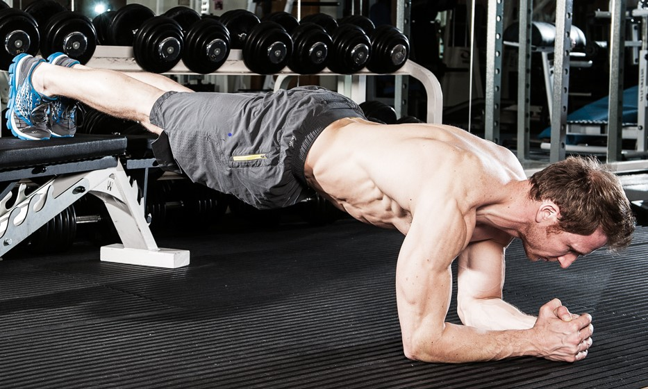
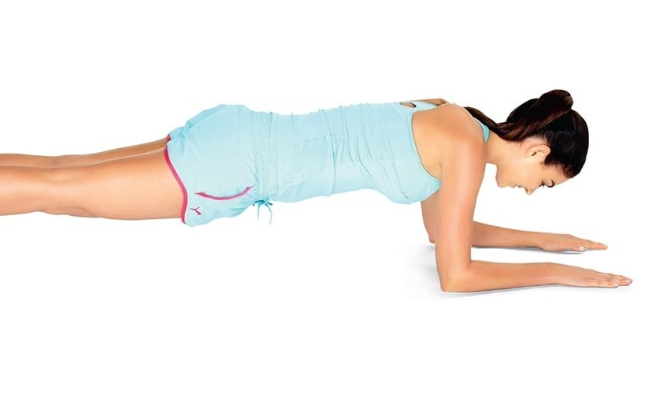
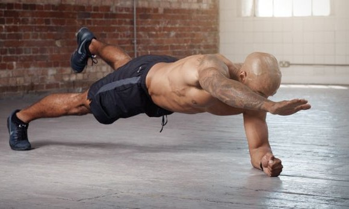
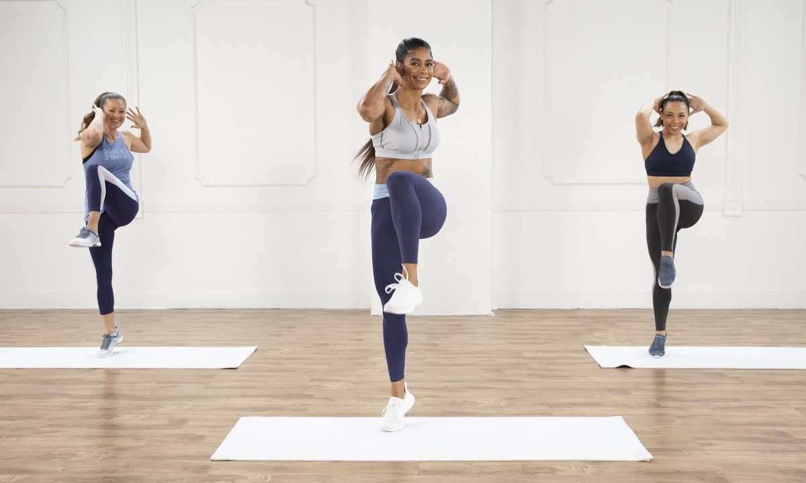

-

Isometric Core
Изометријска вежба је облик вежбе који укључује статичку контракцију мишића без икаквог видљивог померања у углу зглоба. Израз "изометријски" комбинује грчке речи "Исос" (једнак) и "метриа" (мерење), што значи да се у овим вежбама дужина мишића и угао зглоба не мењају, иако снага контракције може бити различита. То је у супротности са изотоничним контракцијама, код којих се снага контракције не мења, иако дужина мишића и угао зглоба делују.   -
Standing Core
Стојећи, који се још назива и ортостаза, је људска позиција у којој се тело држи у усправном ("ортостатском") положају, а подупире га само стопала. Иако наизглед статичан, тело се лагано љуља напред-назад од глежња у сагиталној равнини. Сагитална равнина дели тело на десну и леву страну. Нагиб мирног стајања често се успоређује са покретом обрнутог клатна. -
Dynamic floor
Ово је динамична листа и можда никада неће моћи да задовољи одређене стандарде за комплетност. Можете си помоћи тако што ћете је проширити уносима са поузданим изворима.